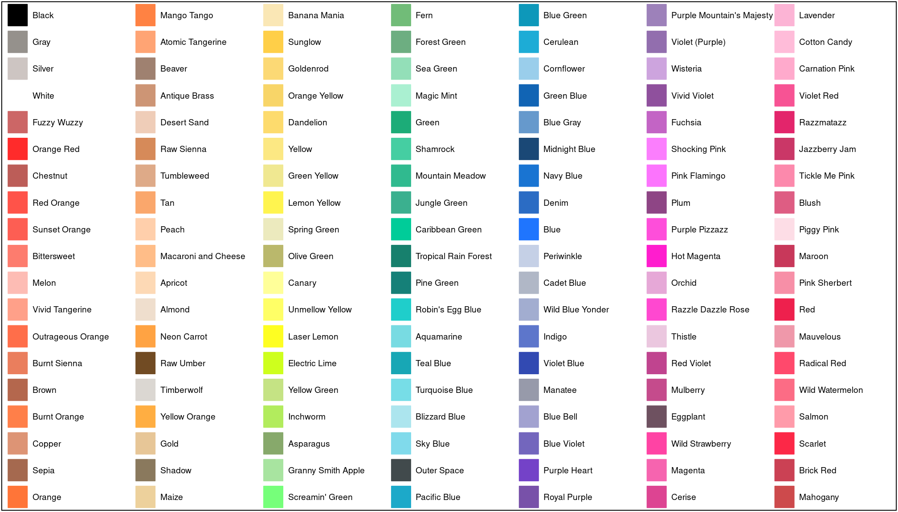

Back in 2014, I’d grabbed the Crayola crayon colors from Wikipedia and made them available as part of my R/broman package.
(I wrote about it on previously, and then again and again.)
But using my package to get the crayon colors can be rather tedious.
It’s easy to view the available colors.
library(broman)
plot_crayons()
But grabbing a color, say “Purple Mountain’s Majesty”, requires rather verbose code.
brocolors("crayons")["Purple Mountain's Majesty"]
## Purple Mountain's Majesty
## "#9d81ba"This morning, it was just too much for me. So I wrote a simpler
function crayons(), which accepts partial matches, using grep.
So you can write things like:
crayons("purple m")
## Purple Mountain's Majesty
## "#9d81ba"
crayons("tickle")
## Tickle Me Pink
## "#fc89ac"
crayons(c("purple m", "tickle"))
## Purple Mountain's Majesty Tickle Me Pink
## "#9d81ba" "#fc89ac"
crayons("purple m", "tickle")
## Purple Mountain's Majesty Tickle Me Pink
## "#9d81ba" "#fc89ac"Why didn’t I think of this before?
The new version of the package is not yet on CRAN, but you can install it from GitHub using devtools:
devtools::install_github("kbroman/broman")Or you can ignore the rest of the package and just grab the code.